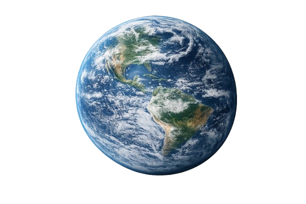
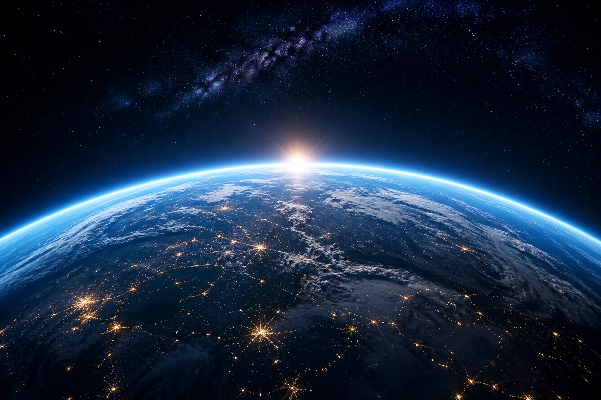
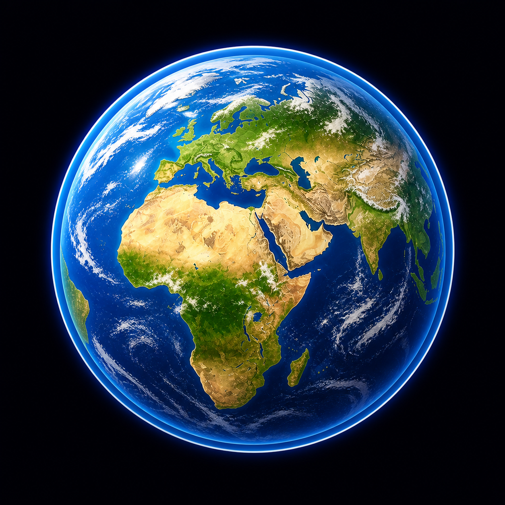
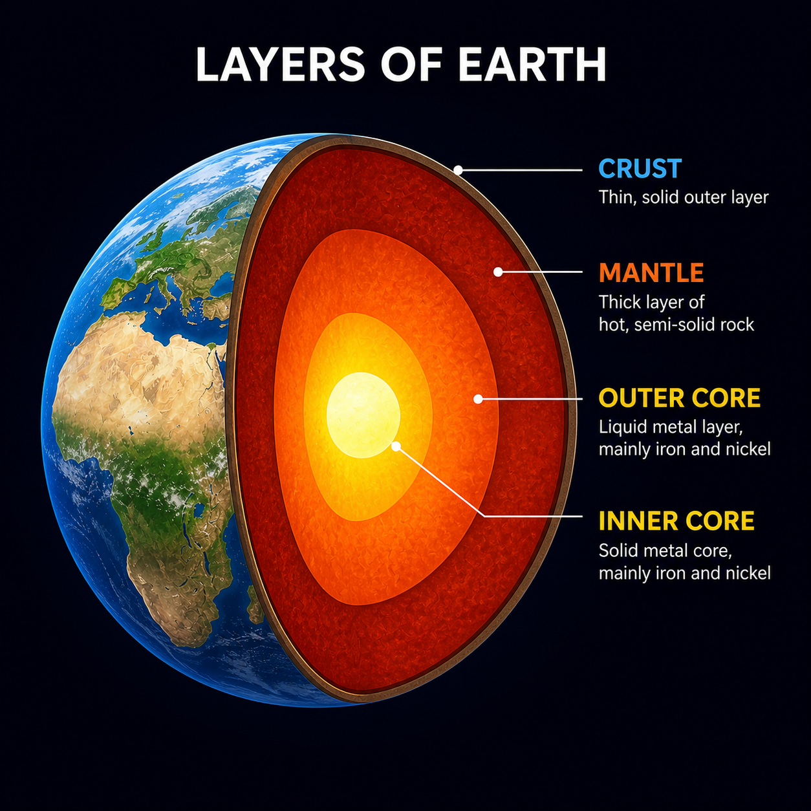

Planet Earth
Earth is the third planet from the Sun and the only known world to support life.
Quick facts
- Type: Terrestrial (rocky) planet
- Distance from Sun: About 150 million km
- Length of year: 365.25 Earth days
- Number of moons: 1 (the Moon)

Did you know?
Earth's rotation is slowing down — days get longer by about 1.7 milliseconds every century.


Learn more about EarthUse the buttons below to switch between different types of information about Earth.
Earth formed about 4.5 billion years ago. Its surface is shaped by plate tectonics, which move continents and create mountains and oceans over long periods of time.
Earth's atmosphere is mostly nitrogen and oxygen. It protects us from harmful radiation and helps keep the planet warm enough for liquid water.
Earth is the only known planet with life. From tiny microbes to huge whales, life has adapted to almost every environment on the planet.
Earth's Interior

Why Earth matters in space science
By studying Earth, scientists learn how planets work in general. This helps us understand other worlds in our Solar System and beyond, and to ask whether they might also support life.